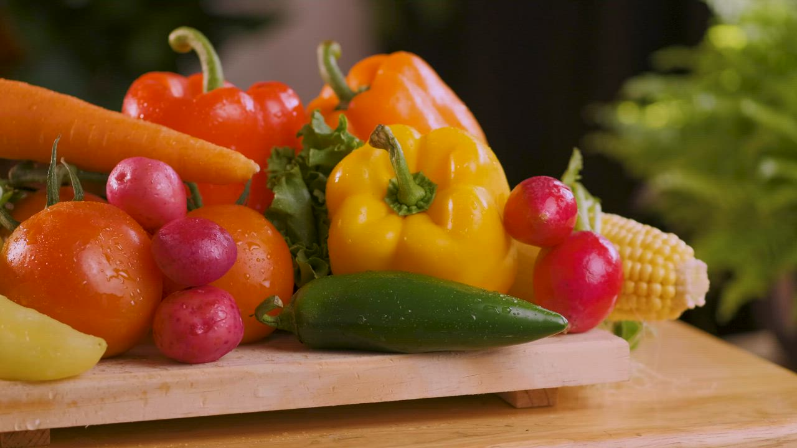

How AI Vision is Cutting Household Food Waste in Half
The average household tosses out ₹3,000+ in spoiled groceries every month. Learn how automatic camera detection and proactive shelf-life countdowns solve the root cause of kitchen waste.
Practical guides on cutting food waste, organizing your fridge, product updates, and cooking gourmet meals with everyday pantry staples.

Food Waste ReductionThe average household tosses out ₹3,000+ in spoiled groceries every month. Learn how automatic camera detection and proactive shelf-life countdowns solve the root cause of kitchen waste.
 Kitchen Organization
Kitchen Organization
From designated "Eat First" baskets to smart temperature zoning, discover five simple layout techniques professional organizers use to keep perishables visible and fresh.
Our latest release introduces multi-barcode scanning, full supermarket receipt OCR, and offline Progressive Web App capabilities for lightning-fast inventory entry anywhere.
 Smart Recipes
Smart Recipes
Don't discard wilted greens, soft tomatoes, or lone carrots! Explore seven delicious, chef-crafted recipes that turn kitchen odds and ends into culinary masterpieces.
 Food Waste Reduction
Food Waste Reduction
Millions of edible groceries are thrown away prematurely due to date label confusion. Here is the definitive food scientist guide on what food labels really mean.
 Kitchen Organization
Kitchen Organization
Impulse buys and duplicate purchases account for 35% of supermarket spending. See how automated inventory depletion tracking keeps your grocery runs laser-focused.